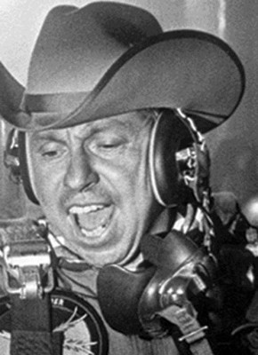
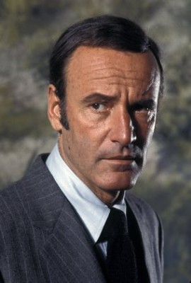
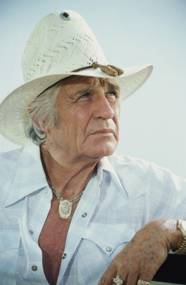
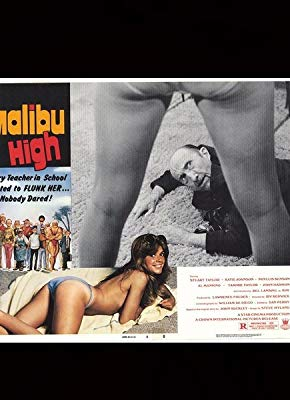

#10477 Sein letzter Ritt
Alternativ: The Honkers (Englischer Titel)


 IMDB-Wertung: 6.1 / 10
IMDB-Wertung: 6.1 / 10  Metascore: 0
Metascore: 0 
Es ist schon einige Zeit her, dass Rodeoreiter Lew Lathrop (James Coburn) Erfolge feiern konnte. Besonders seine Frau Linda (Lois Nettleton) und der gemeinsame Sohn müssen unter dem jähzornigen Ex-Champion leiden...
Jahr: 1972
Dauer: 98 Minuten
FSK:
Land: USA Studio: United ArtistsTonspuren: DD2.0 - ,
Untertitel:
Auflösung: 1080p (1920x1024) Größe: 5928 MB
Genre: Action, Drama, Komödie, Western
Regisseur: Steve Ihnat
Drehbuch: Steve Ihnat, Stephen Lodge
Soundtrack: Jimmie Haskell
Darsteller:
 James Coburn als Lew Lathrop
James Coburn als Lew Lathrop- Lois Nettleton als Linda Lathrop
-  Slim Pickens als Clete
 Anne Archer als Deborah Moon
Anne Archer als Deborah Moon-  Richard Anderson als Royce Owens
-  Jim Davis als Sheriff Potter
 Ramon Bieri als Jack Ferguson
Ramon Bieri als Jack Ferguson- Ted Eccles als Bobby Lathrop
 Mitchell Ryan als Lowell
Mitchell Ryan als Lowell-  John Harmon als Sam Martin
- Pitt Herbert als Haberdasher
- Bobby Hall als Dave (uncredited)
- Royd McCargish als Parade Participant (uncredited)
- Joan Huntington als Rita Ferguson
- Wayne McLaren als Everett
- Richard O'Brien als Matt Weber
- Luther Elmore als
- Chuck Parkison Jr. als Announcer
- Larry Mahan als Larry Mahan
- Paul Brown als Rodeo Worker (uncredited)
- Ross Dollarhide als Travis (uncredited)
- Jerry Gatlin als Shorty (uncredited)
- Buzz Henning als Rodeo Rider (uncredited)
- Chuck Henson als Rodeo Rider (uncredited)
- Chris Howell als Rodeo Rider (uncredited)
- Wayne McClellan als Rodeo Rider (uncredited)
- Larry McKinney als Clown (uncredited)
- Kitty Sadock als Waitress (uncredited)
- Bud Walls als Harve (uncredited)
Datei: X:\HD-Western-1960-1979\Sein letzter Ritt (1972, FSK, 1920x1024).mkv seit 11.01.2019
Festplatte: HD Eastern+Western
 Es gibt insgesamt 110 Filme in der Gruppe 'HD-Western-1960-1979'
Es gibt insgesamt 110 Filme in der Gruppe 'HD-Western-1960-1979'